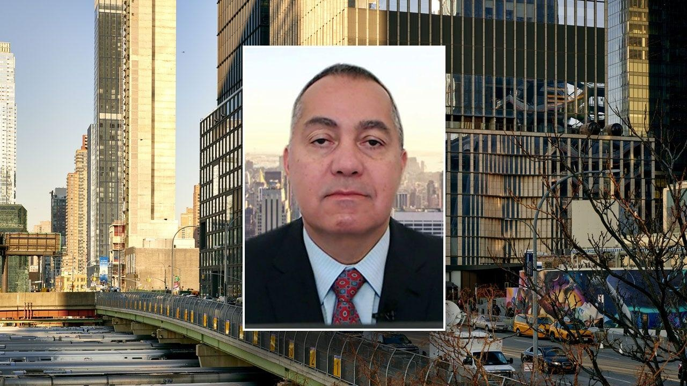

Fed’s interest rate decisions 'destroyed' commercial real estate market, expert warnsAs the Fed continues its attempts to tame inflation, one real estate expert is sounding the alarm on interest rates destroying the commercial real estate industry as a result. Don Peebles, chairman and CEO of The Peebles Corporation, warned of uncertainty shrouding the future of the market during an appearance on "Mornings with Maria" Wednesday. The Fed’s monetary policy regarding interest rates have "destroyed the commercial office market, and it’s going to cause considerable problems in apartments," he stressed. "You’re going to see significant vacancy, significant stress, and ultimately the Fed beginning to cancel some of these leases," Peebles said. "I think that’s what's happened, is that anyone who has bought an office building in the last market cycle has problems or problems are waiting to happen," The Peebles Corporation founder said. He continued, arguing that "anyone who bought an apartment building at a three and a half percent cap" will also encounter problems. The real estate expert told FOX Business’ Maria Bartiromo that the problems mounting in the industry "are going to create a lot of headwinds in our economy." Unsurprised by the issues unraveling in the specific market, though, Peebles noted that the problems are "so big" that lenders have to "hope and pray that things get better." "They’re kicking the can down the road because they don’t want these properties back," he stressed. "You’re going to see more and more investors give their properties back to the senior lenders, and that’s beginning to happen," Peebles warned. As a solution to the downward trend in the niche real estate market, Peebles suggested that it’s time for the Treasury Department and the Fed to begin looking at "controlling inflation differently." In September, the Federal Reserve announced that it would leave interest rates unchanged at a range of 5.25% to 5.5%, the highest in 22 years. FOX Business’ Megan Henney contributed to this report. |
 |